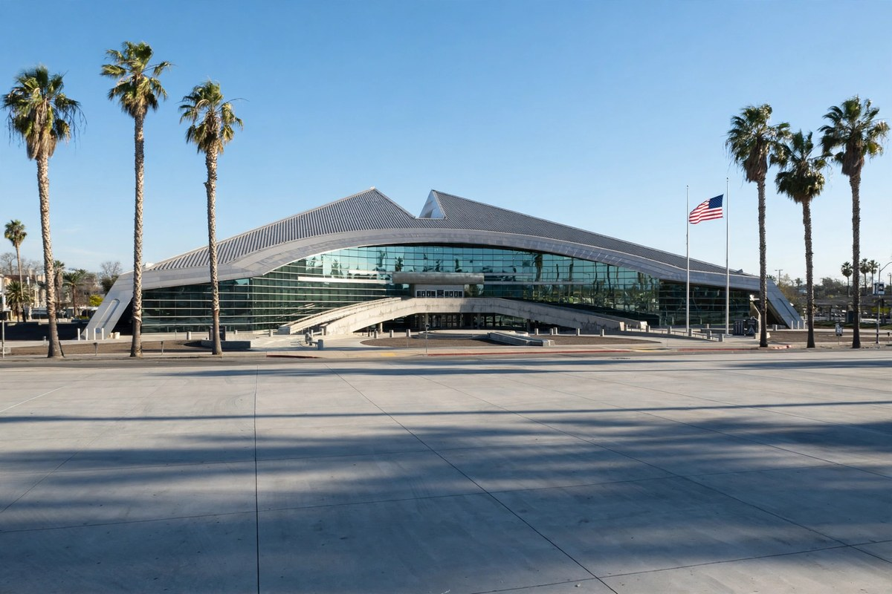

The Fresno City Council takes up a resolution today that would tell federal immigration officers they may not use city property to stage their arrests. It is, by the reporting, one of Annalisa Perea's last acts before she leaves the council for Sacramento — and it arrives as a question the article that broke the news puts right in its headline: will they comply?
Chapter OneThe resolution
What Perea is asking the council to adopt
Perea, the District 1 representative, is proposing a ban on ICE using city property to stage immigration arrests. The resolution is on the council's agenda for Thursday, November 12, and she plans to discuss it at a news conference the same day. Nelson Esparza is a cosponsor.
The resolution would restrict federal civil immigration enforcement on city property. As the article quotes it, no city employee or contractor:
"shall knowingly authorize or voluntarily permit City-owned or City-controlled property to be used for staging immigration enforcement operations"
That covers staging, and it reaches further: temporarily detaining individuals for immigration purposes, surveillance, or use of city property as a "logistical hub."
There is a carve-out, and it matters. The same legislation reads: "Nothing in this resolution shall prohibit federal officers from entering areas of City property generally open to the public" to enforce non-immigration laws. In other words, the ban is aimed at immigration enforcement staging — not at a federal officer walking into a public area of a city building on other business.
Chapter TwoWhat's missing
No incidents, no definitions, no penalties, no enforcer
The resolution does not mention any specific incidents of ICE using city property to conduct raids. It does not say this happened at a particular lot, on a particular date, to a particular person. It is a ban written in advance of a named event.
Terms are not defined in the resolution, nor are there penalties listed for ICE or city officials not complying. How the resolution would be enforced, or who would enforce it, is not spelled out. What it does instead is direct the city manager to develop procedures to monitor and report "unauthorized" use of city property for immigration enforcement activities.
One change worth noting
A previous version of the resolution included a ban on "civil immigration enforcement." The current version removed the word "civil." The article does not say why. The difference matters, because "civil" is doing real work in that sentence — it separates immigration enforcement from criminal enforcement — and the version going to the council no longer draws that line.
So what the council is being asked to adopt today is a resolution that says "don't let them stage here," without saying what counts as staging, without naming a single time it happened, without a penalty for doing it anyway, and without naming who stops it. The city manager gets told to write the procedures after the fact.
Chapter ThreeWho decides
A lame-duck author, a cosponsor, and a mayor with a veto
Perea leaves for the state Assembly on December 7. She won the Assembly District 31 seat on November 3, and this is one of her final acts on the council she is leaving. Esparza, her cosponsor, is staying. If the council passes the resolution, it could be vetoed by Mayor Jerry Dyer.

That is the shape of it: a departing councilmember's resolution, a cosponsor, a mayor who can say no, and a city manager who would have to figure out how any of it works in practice. The council votes on it today. The news conference is today. And the federal government has already answered — before the vote.
Chapter FourThe backdrop
The state already did this. The federal government already answered.
Fresno would not be the first city to do this. San Francisco, Los Angeles, and Berkeley already restrict ICE's use of city-owned property. And the state has already done the same thing at its own level: AB 1807, a law signed by Gov. Gavin Newsom on September 29, 2026, bans ICE from using state property for staging, processing, or detention. It takes effect January 1, 2027, and state agencies must have procedures in place to document prohibited uses and notify the Attorney General's office by July 1, 2027. The law, by its own terms, does not regulate the conduct of federal agents and does not impose requirements that conflict with the federal Supremacy Clause.
That last point is the whole fight. A city resolution cannot override federal law, and the Department of Homeland Security said so to Independent in the Field before the council even voted:
"We remain disappointed that sanctuary politicians seek to limit cooperation with ICE, as our law enforcement are simply fulfilling their sworn duties to serve and protect our communities. The Supremacy Clause makes it clear that sanctuary politicians do not control federal law enforcement." — A federal Department of Homeland Security spokesperson, to Independent in the Field
The Supremacy Clause is Article VI of the U.S. Constitution: federal law is the supreme law of the land. When a city resolution and federal enforcement collide, the Constitution has already picked the winner. What a resolution like this can do is narrower — it can tell city employees not to volunteer city property, not to help stage what the federal government is going to do anyway. Whether that holds up in practice, and whether anyone enforces it, is the question the council is voting on without having answered it in the text.
ClosingWhat this means for the District
This is my view, and I am labeling it mine. The High Tower District stands on three things: follow the laws of man, follow the laws of Jesus Christ our Lord and Savior, and demand respect as the administrator. A resolution that tells federal officers they cannot use city property to do their sworn duty does not follow the laws of man — the Supremacy Clause is the law of man, written into the Constitution, and it does not bend for a city council vote.
I have been clear about where I stand on ICE, and I will not soften it here: I support immigration enforcement, and I support it most where it protects children — against sex predators and child sex trafficking across state lines. That is the work that matters. A council that moves to keep federal officers out of its parking lots while predators cross state lines is a council that has its priorities backwards, and I have said for a long time that I do not respect this council, because I believe it is corrupt.
One honest note, because it is mine to own: I voted for Annalisa Perea for the Assembly on November 3. I trusted her testimony on AB 2753 over the party label. That vote was for Sacramento. This resolution is her last act in Fresno, and on this one I disagree with her. A vote for a person is not a vote for everything they do after.
The question the article asks is the right one: will they comply? A resolution with no penalties and no defined terms is a statement, not a wall. The Supremacy Clause is the federal answer, and it was written before any of us were born. What the council does today is the local answer. Watch which one holds.
— Aaron Michael Hightower, from the High Tower District